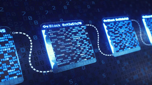

Blockchain is a database- a database is a collection of data stored in a computer system. However, the blockchain of cryptocurrencies is very different from a standard database- what makes the database different from a standard database is that it is unchangeable, uncontrollable by one person or company and it does not have downtime.
In 2021 Blockchain is comprised of three eras (blockchain 1.0, blockchain 2.0, blockchain 3.0) each era represents the level of adoption and progress that has been made in different industries. Blockchain 1.0 is known for the era of programmable currency- it was in this era that the most famous and the first crypto token (Bitcoin) was anonymously made by a person or a group with the code name Satoshi Nakamoto. Satoshi released 30000 lines of open-source code for the world to access. These codes represented a monetary system that allowed peer-to-peer transactions done on the blockchain which could not be controlled, manipulated, or tracked. Although bitcoin is not scalable and as revolutionary as the new tokens, it gave a blueprint to the projects built in the next era to improve upon.
The next Era commonly referred to as Blockchain 2.0 or the programmable finance era was when the Cryptocurrency 'Ethereum' was made by the founder Vitalik Buterin and co-founder Charles Hoskinson. Ethereum was the next level of the use case in Blockchain as it introduced Smart contracts. Smart contracts, in simple terms, are programs stored in blockchain which execute their purpose when a set of predetermined conditions are met. If adopted they will be able to revolutionize modern finance as they will remove the “middle man” in different types of transactions. An example of that is purchasing a property. To purchase a property, you pay a percentage to a broker to process the transfer of ownership. However soon, it can be as simple as writing a smart contract on the Eth network which states that the “X property was purchased by Y “. This lowers the fee, speeds up the process and at the same time, it means a safer transaction as it is impossible to hack and manipulate the blockchain. In the meantime, “smart contracts” are already used by artists in the form of NFTs (non-fungible tokens). Many musicians have used NFTs to sell their art directly to the consumers thus lowering the cost by taking music labels out of the equation. As more companies adopt cryptocurrencies and blockchain it will not be long that we use blockchain networks to make every transaction in our life.
As of September 2021, we are in the 3rd stage of blockchain adoption or the programable society era, as the interest in blockchain by institutional investors increases, new companies have used the information and sources available to come up with more solutions to problems in our day-to-day lives to move towards a more efficient future. Companies such as IOHK with the Cardano foundation have used their resources to improve on the era 1 and 2's weaknesses such as scalability and fees to push the technology forward. In the next 3-5 years it is expected that more public companies such as Amazon and Apple will adopt cryptocurrencies and build on blockchain. In the initial stages, we might not realize that the blockchain has been implemented however long-term blockchain can be as revolutionary as the internet adoption in the 1990s and early 2000s. As of 2021 Bitcoin alone has the same number of users as the internet before mainstream adoption. Many experts believe that the market capitalization of bitcoin alone will surpass 16 trillion dollars (each coin will be worth $1 million USD). This will be possible as more countries will have access to the internet and more institutions will add Bitcoin as the digital gold and other cryptocurrencies to diversify their spreadsheet to show that they are always looking for improvement in the financial sector to their investors. This leads to the exponential growth of blockchain by promoting and funding inventions. This leads to blockchain adoption in every possible industry.
(Source: BuiltIn.com)
The first and most meaningful impact caused by the adoption of cryptocurrencies will be their solution to problems with the modern monetary banking system. Problems such as non-existent privacy, quantitative easing (increasing the supply of money and causing the value to depreciate) can be solved by cryptocurrency- a digital currency such as Bitcoin, was designed to be deflationary to hold their values. To create a bank account in any national bank you will require to provide information such as a solid form of ID (passport, driver's license etc), you are also expected to provide information such as tax file number or ABN for a business account. Furthermore, will also have to accept that the government can have access to your accounts transactions if they want to without permission. Many people do not agree with such invasion of privacy- but they are forced to just accept it, as, in this day-and-age, living without a bank account is impossible. Developments in blockchain solve this problem as the blocks of data are known by random numbers and letters rather than a name and account number, this means that transactions are almost untraceable. National banks also can manipulate the supply of a fiat currency which means a $100 left in a bank account will possibly be worth next to nothing in the very near future. Cryptocurrencies can solve that problem by using digital codes that act like real-life contracts, for example for bitcoin the codes state that only 21,000,000 coins can be mined using computers solving mathematical equations compared to Fiats that can be printed by central banks at any time with no maximum supply limit. A decentralized system that works by itself means that the supply of the currency cannot be controlled by one person or a company.
If this technology successfully becomes adopted the traditional banking system can become extinct or changed in 1-2 decades. This means many jobs will be extinct but meanwhile, many more opportunities will be created in the IT industry related to blockchain and data storage career paths. Many music labels also will be out of business as NFTs become common as they will be able to control the sale and the copyrights of their albums on their own without a contract.
(Source: Forbes)
Blockchain will change our daily lives dynamic significantly in the next 1-2 decades. According to OAIC's survey done in 2017 83% of Australians believe that their data is at greater risk while dealing with an organisation. With the adoption of the blockchain, Australians can be more confident online and will feel more confident to make transactions without government interference. The fees of the transaction will also decrease drastically. For example, if an individual wants to send money to their family overseas they can make the transaction with no (or with lower) taxes. The transaction will also be safer as blockchain is immutable without quantum computing, which may not be possible for a long time. Furthermore, with the adoption of cryptocurrency, Australians will be able to get payments from their employer in their preferred digital currency. Cryptocurrency adoption also helps to Bank the third world countries by giving them equal access to the new payment systems. This has already started happening in countries such as El Salvador. Platforms such as Cardano and Ethereum can also boost building a safer and more productive society. For example, it can contribute to lower fees, faster transactions, and safer transactions on house ownership transfers.
Blockchain technology also can be used for voting. This can make sure that every elected candidate is chosen fairly and the results cannot be altered in favour of a party. Blockchain also can be used as a tracker of different supplies and suppliers in different industries. According to Healthdirect.gov.au 9 million Australians take prescription medication every day. The Australian government is concerned with the growing number of medications sold illegally without a prescription. This problem can be solved by using supply chain blockchain technologies that track the distribution. This technology can identify where these medications were taken out of distribution and can make sure that no one will be able to manipulate data. In our daily lives, this can lead to a safer community as there will be less criminal activity related to these drugs and will also improve the overall health of our community by making sure the drugs distributed were prescribed correctly.